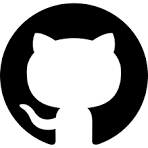

Software Engineer
Soy una persona apasionada, con ganas de aprender
y mejorar mientras trabajo.
Me adapto rápido y doy mi mejor esfuerzo por mejorar.
Me gusta asumir responsabilidad y trabajar en equipo.
Busco una oportunidad donde aportar mi conocimiento,
aprender mucho, y crecer.
porroandres21@gmail.com
+598 95 083 507
